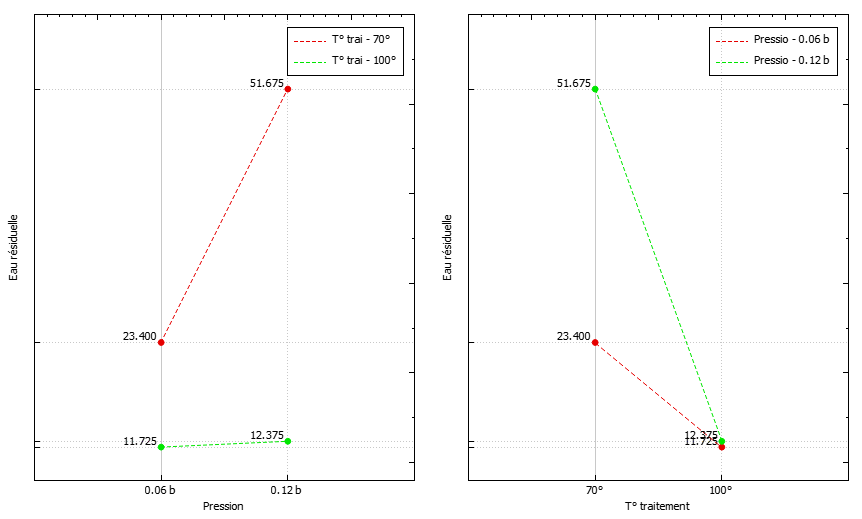
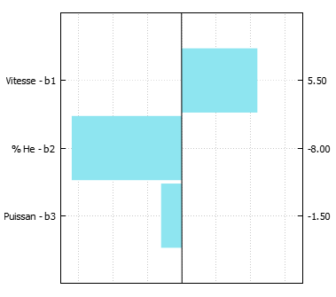

Pourquoi toutes les expériences
ne se valent-elles pas ?
La séance est organisée autour de cinq controverses. Pour chacune, vous ferez d'abord une prédiction, puis vous défendrez une position en équipe avant que les résultats ne soient révélés.
Supports : F0 (mathématiques) · F1 (stratégie) · M1 (livret de missions) · laboratoire interactif.
Une expérience sert à décider
Vote à main levée (30 s, sans discuter) :
deux plans de 4 essais chacun peuvent-ils donner des estimations de précision différente ?
Oui · Non · Ça dépend
« La qualité de l'information dépend de la position des points expérimentaux et non des résultats expérimentaux ni du nombre d'expériences. »
Une affirmation que l'on rencontre souvent. Vrai, faux ou à nuancer ? Nous y reviendrons à la fin.
Améliorer le rendement d'une extraction
Réponse : rendement d'extraction d'un pesticide (%)
Facteurs : température \(T\) et durée \(t\)
Contrainte : 1 essai = ½ journée d'extracteur → 4 essais au plus
Répétabilité connue : \(\sigma \approx 1{,}5\) point
| Facteur | −1 | +1 | centre | pas |
|---|---|---|---|---|
| \(x_1\) : \(T\) | 40 °C | 60 °C | 50 °C | 10 °C |
| \(x_2\) : \(t\) | 1 h | 2 h | 1,5 h | 0,5 h |
Codage : le domaine devient le carré \([-1;1]^2\). (F1 §2.3)
Seul, sans IA, 3 min (M1 p. 3)
- Quels essais, dans quel ordre ?
- Quelle stratégie trouvera les meilleures conditions ?
- Rendement prévu à (60 °C ; 2 h) ? Confiance de 1 à 5.
Deux positions défendables
Équipes impaires « Prudence »
Un facteur à la fois depuis (40 °C ; 1 h). L'ordre et la règle de décision sont à choisir. Lisibilité, économie, adaptation.
Équipes paires « Carte »
Les 4 combinaisons. Couverture du domaine, et une question : l'effet de \(T\) dépend-il de \(t\) ?
Laboratoire A : E1–E4 · Laboratoire B : E5–E8. Les deux laboratoires traitent des échantillons de matrices différentes.
Les résultats des deux laboratoires
Laboratoire A · sédiment sableux
« Un facteur à la fois » prédit 23 + 14 + 18 = 55 en (60 °C ; 2 h)…
… la mesure donne 59. L'écart est modéré.
Laboratoire B · boue de station
« Un facteur à la fois » prédit 17 + 26 + 48 = 91…
… la mesure donne 35. Le meilleur choix était (40 °C ; 2 h) : 65.
Dans le laboratoire B, l'ordre des essais décide
\(T\) d'abord → choix final 43
\(t\) d'abord → choix final 65
Les deux équipes appliquent la même méthode avec le même nombre d'essais, mais elles aboutissent à deux recommandations différentes. Dans le laboratoire A, les deux ordres mènent à (60 °C ; 2 h).
Interaction : l'effet de \(T\) dépend de \(t\)
| \(b_1^-\) | \(b_1^+\) | \(b_{12}\) | \(b_1\) | |
|---|---|---|---|---|
| A | 7 | 9 | 1 | 8 |
| B | 13 | −15 | −14 | −1 |
Laboratoire B : \(b_1 = -1\), et pourtant \(T\) fait varier le rendement de +26 points à 1 h et de −30 points à 2 h.
Trait plein : t = 1 h · tirets : t = 2 h. Bleu : laboratoire A · orange : laboratoire B.
F1 §4.
Sécheur de gazole : pression × température

À 70 °C, augmenter la pression : 23,4 → 51,7
À 100 °C : 11,7 → 12,4
Pour voir une interaction, il faut faire varier les deux facteurs ensemble au moins une fois.
Faire varier un facteur à la fois : dans quels cas ?
Défendable quand…
- les interactions sont négligeables, et l'on sait pourquoi
- le bruit est faible devant les effets
- les essais sont séquentiels et rapides (stratégie adaptative : Frey & Wang, 2006)
- l'objectif est une amélioration locale
Risqué quand…
- une interaction est plausible : on ne peut ni l'estimer, ni la détecter
- il faut prédire ou comprendre
- le bruit compte : \(\mathrm{Var}(b) = \sigma^2/2\) au lieu de \(\sigma^2/4\)
Avec un facteur à la fois, l'effet mesuré pour la température vaut en moyenne \(b_1 - b_{12}\), et l'erreur de prévision au coin non testé vaut \(4\,b_{12}\).
Vocabulaire. Coefficient codé \(b_j = (\bar y_+ - \bar y_-)/2\) ; effet total \(\Delta_j = 2 b_j\). Dans A : \(b_1 = 8\), \(\Delta_1 = 16\) points, soit 0,8 point par °C.
Czitrom (1999), Am. Stat. 53(2) ; Frey & Wang (2006), Technometrics 48(3) ; Daniel (1973), JASA 68. F1 §3–4.
| Lot | T (°C) | t (h) | Rdt (%) |
|---|---|---|---|
| 1 | 40 | 1 | 22,8 |
| 2 | 45 | 1,25 | 30,3 |
| 3 | 50 | 1,5 | 39,5 |
| 4 | 50 | 1,5 | 38,7 |
| 5 | 55 | 1,75 | 48,4 |
| 6 | 60 | 2 | 57,5 |
La direction demande : peut-on passer à 60 °C pendant 1 h ? Quel rendement attendre ?
Journal simulé à partir du modèle du laboratoire A, σ = 1,5, graine 2024.
Trois analystes, un même journal
| \(\hat b_1\) (T) | \(\hat b_2\) (t) | somme des carrés des résidus | prédiction en (60 °C ; 1 h) | |
|---|---|---|---|---|
| Analyste 1 : « seule la température compte » | 17,5 | 0 | 1,75 | 57,0 |
| Analyste 2 : « seule la durée compte » | 0 | 17,5 | 1,75 | 22,0 |
| Analyste 3 : « les deux autant » | 8,75 | 8,75 | 1,75 | 39,5 |
| Essai réalisé à (60 °C ; 1 h) | 37 | |||
Les trois analyses décrivent le journal aussi bien l'une que l'autre. Les données ne permettent pas de les départager, et des lots supplémentaires du même type n'y changeraient rien.
Seule la somme \(b_1 + b_2 = 17{,}5\) est déterminée : c'est l'effet d'un changement combiné de T et de t.
Deux colonnes identiques : la confusion des effets
On peut ajouter \(\lambda(0,-1,1)\) aux coefficients sans changer aucune prédiction aux 6 lots.
Rang de \(\mathbf X\) = nombre maximal de colonnes linéairement indépendantes. Ici 2 < 3 coefficients : le modèle n'est pas identifiable.
Tous les lots sont sur la diagonale. L'essai découplé (60 °C ; 1 h) lève la confusion.
F0, section 5 · F1 §5.
Ce qui est identifiable dépend de la question posée
Faire varier ensemble suffit si…
- la décision porte sur un changement combiné (protocole 1 → protocole 2)
- les facteurs sont liés par une contrainte physique
- on veut seulement détecter « quelque chose »
Insuffisant si…
- on veut attribuer un effet à un facteur
- on veut prédire une combinaison non testée
- on veut diagnostiquer un problème
Données de production : la confusion y est la règle (habitudes des opérateurs, saisons, lots). Une régression produit toujours des nombres ; elle ne garantit pas leur sens.
Pause
Reprise dans 15 minutes : touche T.
À la reprise : « Plus d'expériences signifie-t-il plus d'information ? »
Seul, 3 min : classez P1 à P5 du plus informatif au moins informatif. Que veut dire « informatif » pour vous ?
Le modèle linéaire, en une ligne
Une ligne par essai, une colonne par terme du modèle (1, \(x_1\), \(x_2\), \(x_1x_2\)…).
« Linéaire » : linéaire en les coefficients. \(x_1x_2\) et \(x_1^2\) sont permis.
Moindres carrés : \(\hat{\boldsymbol\beta} = (\mathbf X^\top \mathbf X)^{-1}\mathbf X^\top \mathbf y\) (F0, section 8)
\(\mathbf X^\top\mathbf X\) : un tableau de produits scalaires de colonnes
P4 (factoriel) : \(\mathbf 1\cdot\mathbf 1 = 4\), \(\mathbf 1\cdot\mathbf x_1 = -1+1-1+1 = 0\), \(\mathbf x_1\cdot\mathbf x_2 = 1-1-1+1 = 0\)
À vous (M1 p. 6) : \(\mathbf X\) et \(\mathbf X^\top\mathbf X\) pour P2 (3 essais), puis P3 (dupliqué) et P1 (journal).
Termes hors diagonale \(\neq 0\) ⟺ colonnes non orthogonales.
Nombre d'essais ≠ rang ≠ répétitions ≠ précision
| Plan | N | rang additif (/3) | rang avec \(x_1x_2\) (/4) | ddl erreur pure | \(\mathrm{Var}(\hat b_1)/\sigma^2\) | \(\mathrm{Corr}(\hat b_1,\hat b_2)\) |
|---|---|---|---|---|---|---|
| P1 journal | 6 | 2 | 3 | 1 | — | — |
| P2 un facteur à la fois | 3 | 3 | 3 | 0 | 1/2 | 0,5 |
| P3 idem dupliqué | 6 | 3 | 3 | 3 | 1/4 | 0,5 |
| P4 factoriel | 4 | 3 | 4 | 0 | 1/4 | 0 |
| P5 factoriel dupliqué | 8 | 3 | 4 | 4 | 1/8 | 0 |
Répéter ne change pas le rang : il réduit la variance et permet d'estimer le bruit.
P3 contre P4 : même \(\mathrm{Var}(\hat b_1)\), mais P4 coûte 2 essais de moins et identifie l'interaction. P3 garde un atout : 3 ddl pour \(\sigma^2\).
Valeurs vérifiées : validation/rapport_verification.md. F1 §7.
Quatre questions avant de compter les essais
Rang
Combien d'effets peut-on séparer ? \(\mathrm{rang}(\mathbf X) = p\) ⟺ identifiable.
Répétitions
Peut-on estimer \(\sigma^2\) sans faire confiance au modèle ? ddl = \(N - n_{\text{distincts}}\).
Précision
Avec quelle dispersion estime-t-on chaque effet ? Réponse : \(\sigma^2(\mathbf X^\top\mathbf X)^{-1}\) (Mission D).
Un plan saturé (\(N = p\)) passe exactement par tous les points. Cet ajustement parfait ne prouve pas que le modèle soit bon : il ne reste simplement aucune mesure pour le vérifier.
Q1 : factoriel
Q2 : un facteur à la fois + base répétée
Seul, 3 min : lequel estime \(b_1\) avec la meilleure précision ? De combien ?
La précision d'un plan se calcule avant l'expérience
1. \(\hat{\boldsymbol\beta} = \mathbf A\,\mathbf y\), avec \(\mathbf A = (\mathbf X^\top\mathbf X)^{-1}\mathbf X^\top\)
2. \(\mathrm{Cov}(\mathbf A\mathbf y) = \mathbf A\,\mathrm{Cov}(\mathbf y)\,\mathbf A^\top\) (F0, section 9)
3. \(\mathrm{Cov}(\mathbf y) = \sigma^2\mathbf I\) et \((\mathbf X^\top\mathbf X)^{-1}\) symétrique :
Hypothèses : erreurs de même variance, non corrélées ; niveaux maîtrisés ; rang plein.
Q2 : \((\mathbf X^\top\mathbf X)^{-1} = \tfrac18\begin{pmatrix}4&2&2\\2&3&1\\2&1&3\end{pmatrix}\)
\(\mathrm{Var}(\hat b_1) = \tfrac38\sigma^2\) contre \(\tfrac14\sigma^2\) pour Q1 : +50 % ; \(\mathrm{Corr} = \tfrac13\).
500 campagnes simulées : la forme de l'incertitude
Chaque point est le couple \((\hat b_1,\hat b_2)\) d'une campagne simulée de 4 essais (monde A sans interaction, \(\sigma = 1{,}5\), graine fixe).
Les ellipses représentent \(\pm 2\) écarts-types, calculés à partir de \(\sigma^2(\mathbf X^\top\mathbf X)^{-1}\).
Cercle : coefficients non corrélés. Ellipse inclinée : une erreur sur un point partagé se répercute sur les deux coefficients.
Laboratoire, onglet « Comparer », code PRECISION.
Zone interdite : \(x_1 + x_2 > 1\). Quel plan de 4 essais ?
| Plan | \(\mathrm{Var}(\hat b_1)\) | Corr | \(\det \mathbf X^\top\mathbf X\) | \(\mathrm{Var}(\hat b_{12})\) |
|---|---|---|---|---|
| Q1 factoriel | non réalisable | |||
| R base répétée | 0,375 | 0,33 | 32 | non identif. |
| C centre | 0,458 | 0,45 | 24 | 1,5 |
| F frontière | 0,336 | 0,25 | 38 | 0,47 |
| S resserré ±0,5 | 1 | 0 | 4 | 4 |
Variances en unités de \(\sigma^2\). Rôles : une fiche de plan par équipe (M1-annexe p. 5). Laboratoire, code CONTRAINTE.
Cinq notions à ne jamais confondre
| Notion | Question | Contre-exemple de la séance |
|---|---|---|
| Identifiable | rang(X) = p ? | R identifiable, mais non orthogonal |
| Orthogonal | XᵀX diagonale ? | S orthogonal, mais 4 fois moins précis |
| Précis | σ²(XᵀX)⁻¹ petit ? | dépend de la position des points, pas seulement de N |
| Modèle valide | aucun terme oublié ? | 2² orthogonal + courbure oubliée : b̂₀ biaisé (34 au lieu de 40) |
| Sans interaction | propriété du système | laboratoire B : b₁₂ = −14 |
Égalité ⟺ colonne de ±1 orthogonale aux autres (Cauchy–Schwarz, F0, section 9).
| Facteur | −1 | +1 | |
|---|---|---|---|
| A | Température d'extraction | 30 °C | 60 °C |
| B | Durée d'extraction | 10 min | 40 min |
| C | Ajout de NaCl | 0 % | 25 % |
| D | Agitation | 250 tr/min | 750 tr/min |
Répétabilité : \(\sigma \approx 3\) unités d'aire. Une interaction A × B est plausible. L'effet de l'agitation est discuté.
Fiche d'équipe (M1 p. 10) : stratégie, matrice 8 × 4, modèle, hypothèses, ce que l'on ne pourra pas conclure.
Puis 90 s par équipe et 2 critiques tirées au sort.
Ce qu'il faut retenir de la séance
- une stratégie repose sur des hypothèses (additivité, absence de courbure) qu'elle permet, ou non, de tester ;
- l'identifiabilité se lit dans le rang de \(\mathbf X\), pas dans le nombre d'essais ;
- la précision, \(\sigma^2(\mathbf X^\top\mathbf X)^{-1}\), dépend de la position des points et se calcule avant d'expérimenter ;
- un bon plan dit aussi ce qu'il ne permettra pas de conclure.
Retour au vote du début : deux plans de 4 essais peuvent-ils donner des précisions différentes ? Ticket de sortie, M1 p. 12 (3 min).
